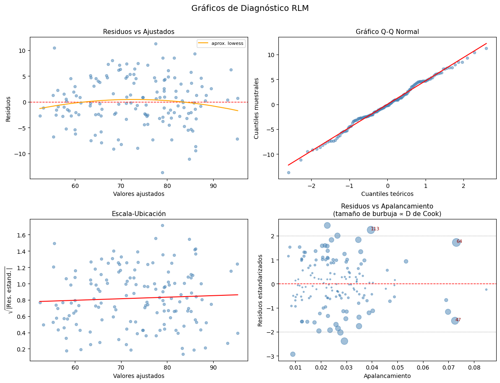
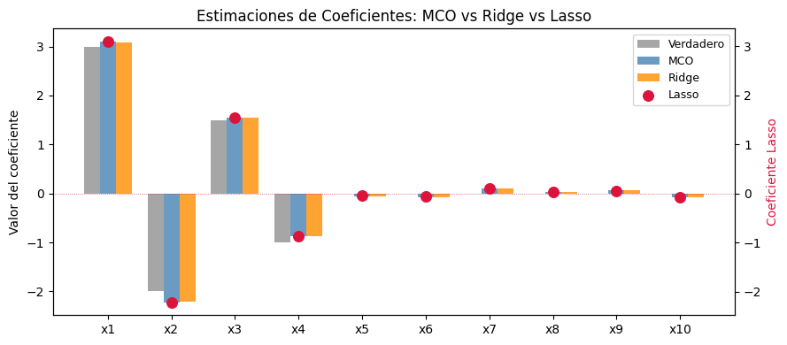

15-1: Repaso — Regresión Lineal (Simple y Múltiple)#
Curso: Modelos de Análisis Estadístico (MAE) — Universidad de los Andes
Docente: Prof. Alejandra Tabares
Semana: 15 — Repaso Final
1. Regresión Lineal Simple (RLS)#
Modelo#
Supuestos LINE#
Letra |
Supuesto |
Cómo verificarlo |
|---|---|---|
L |
Linealidad: $E[Y |
x]\( es lineal en \)x$ |
I |
Independencia: las observaciones son independientes |
Diseño del estudio / Durbin-Watson |
N |
Normalidad: \(\varepsilon_i \sim \mathcal{N}(0, \sigma^2)\) |
Gráfico QQ, prueba de Shapiro-Wilk |
E |
Equivarianza (homocedasticidad): \(\text{Var}(\varepsilon_i) = \sigma^2\) |
Gráfico escala-ubicación, Breusch-Pagan |
Estimadores MCO#
Propiedades de MCO (bajo LINE)#
Teorema de Gauss-Markov: MCO es el MELI (Mejor Estimador Lineal Insesgado)
\(\hat{\beta}_j\) son insesgados: \(E[\hat{\beta}_j] = \beta_j\)
\(\text{Var}(\hat{\beta}_1) = \sigma^2 / S_{xx}\)
Bajo normalidad: \(\hat{\beta}_j \sim \mathcal{N}(\beta_j, \text{Var}(\hat{\beta}_j))\)
2. Regresión Lineal Múltiple (RLM)#
Modelo#
donde \(\mathbf{X}\) es la matriz de diseño \(n \times (p+1)\) (incluyendo la columna de intercepto).
Estimador MCO#
Interpretación#
\(\hat{\beta}_j\) es el cambio estimado en \(E[Y]\) por un aumento de una unidad en \(x_j\), manteniendo fijos todos los demás predictores.
Inferencia#
Prueba |
Hipótesis |
Estadístico |
Distribución |
|---|---|---|---|
Prueba t (coeficiente individual) |
\(H_0: \beta_j = 0\) |
\(t_j = \hat{\beta}_j / \hat{\text{SE}}(\hat{\beta}_j)\) |
\(t_{n-p-1}\) |
Prueba F (global) |
\(H_0: \beta_1 = \cdots = \beta_p = 0\) |
\(F = (SS_R/p)/(SS_E/(n-p-1))\) |
\(F_{p,\,n-p-1}\) |
Prueba F parcial |
\(H_0\): subconjunto de coeficientes \(= 0\) |
\((SS_{E,R}-SS_{E,F})/(p_F-p_R) \;/\; \hat{\sigma}^2_F\) |
\(F_{p_F-p_R,\,n-p_F-1}\) |
Tabla ANOVA para RLM#
Fuente |
SC |
gl |
CM |
F |
|---|---|---|---|---|
Regresión |
\(SS_R = \hat{\boldsymbol{\beta}}^\top \mathbf{X}^\top \mathbf{y} - n\bar{y}^2\) |
\(p\) |
\(MS_R = SS_R/p\) |
\(F = MS_R/MS_E\) |
Error |
\(SS_E = \mathbf{y}^\top\mathbf{y} - \hat{\boldsymbol{\beta}}^\top\mathbf{X}^\top\mathbf{y}\) |
\(n-p-1\) |
\(MS_E = SS_E/(n-p-1)\) |
|
Total |
\(SS_T = \mathbf{y}^\top\mathbf{y} - n\bar{y}^2\) |
\(n-1\) |
import numpy as np
import pandas as pd
import statsmodels.api as sm
import statsmodels.formula.api as smf
from statsmodels.stats.outliers_influence import variance_inflation_factor
import matplotlib.pyplot as plt
import warnings
warnings.filterwarnings('ignore')
np.random.seed(99)
n = 150
# Simular conjunto de datos: calificación ~ horas_estudiadas + nota_previa + sueño
hours = np.random.uniform(1, 10, n)
grade = np.random.normal(70, 10, n) # nota previa (0-100)
sleep = np.random.uniform(4, 9, n) # horas de sueño
# Modelo verdadero: score = 20 + 4*hours + 0.3*grade + 1.5*sleep + ruido
score = 20 + 4.0 * hours + 0.3 * grade + 1.5 * sleep + np.random.normal(0, 5, n)
score = np.clip(score, 0, 100)
df = pd.DataFrame({'score': score, 'hours': hours, 'grade': grade, 'sleep': sleep})
print('Conjunto de datos simulado — primeras 5 filas')
print(df.head().round(2).to_string(index=False))
# ── Regresión Lineal Simple: score ~ hours ─────────────────────────────────────────────
print('\n' + '='*60)
print('REGRESIÓN LINEAL SIMPLE: score ~ hours')
print('='*60)
slr = smf.ols('score ~ hours', data=df).fit()
print(slr.summary())
# ── Regresión Lineal Múltiple: score ~ hours + grade + sleep ──────────────────────────
print('\n' + '='*60)
print('REGRESIÓN LINEAL MÚLTIPLE: score ~ hours + grade + sleep')
print('='*60)
mlr = smf.ols('score ~ hours + grade + sleep', data=df).fit()
print(mlr.summary())
Conjunto de datos simulado — primeras 5 filas
score hours grade sleep
79.12 7.05 76.79 6.07
70.67 5.39 75.55 7.10
82.75 8.43 68.68 4.77
58.11 1.28 76.68 7.65
89.67 8.27 81.64 7.33
============================================================
REGRESIÓN LINEAL SIMPLE: score ~ hours
============================================================
OLS Regression Results
==============================================================================
Dep. Variable: score R-squared: 0.740
Model: OLS Adj. R-squared: 0.738
Method: Least Squares F-statistic: 421.1
Date: Fri, 20 Mar 2026 Prob (F-statistic): 3.93e-45
Time: 17:25:10 Log-Likelihood: -475.71
No. Observations: 150 AIC: 955.4
Df Residuals: 148 BIC: 961.4
Df Model: 1
Covariance Type: nonrobust
==============================================================================
coef std err t P>|t| [0.025 0.975]
------------------------------------------------------------------------------
Intercept 52.4291 1.119 46.834 0.000 50.217 54.641
hours 3.7426 0.182 20.521 0.000 3.382 4.103
==============================================================================
Omnibus: 0.787 Durbin-Watson: 1.904
Prob(Omnibus): 0.675 Jarque-Bera (JB): 0.857
Skew: 0.055 Prob(JB): 0.651
Kurtosis: 2.646 Cond. No. 14.8
==============================================================================
Notes:
[1] Standard Errors assume that the covariance matrix of the errors is correctly specified.
============================================================
REGRESIÓN LINEAL MÚLTIPLE: score ~ hours + grade + sleep
============================================================
OLS Regression Results
==============================================================================
Dep. Variable: score R-squared: 0.832
Model: OLS Adj. R-squared: 0.829
Method: Least Squares F-statistic: 241.1
Date: Fri, 20 Mar 2026 Prob (F-statistic): 2.42e-56
Time: 17:25:10 Log-Likelihood: -442.92
No. Observations: 150 AIC: 893.8
Df Residuals: 146 BIC: 905.9
Df Model: 3
Covariance Type: nonrobust
==============================================================================
coef std err t P>|t| [0.025 0.975]
------------------------------------------------------------------------------
Intercept 21.6242 3.601 6.006 0.000 14.508 28.740
hours 3.8610 0.150 25.686 0.000 3.564 4.158
grade 0.3248 0.041 7.996 0.000 0.245 0.405
sleep 1.1365 0.282 4.027 0.000 0.579 1.694
==============================================================================
Omnibus: 0.465 Durbin-Watson: 2.068
Prob(Omnibus): 0.793 Jarque-Bera (JB): 0.549
Skew: -0.127 Prob(JB): 0.760
Kurtosis: 2.849 Cond. No. 665.
==============================================================================
Notes:
[1] Standard Errors assume that the covariance matrix of the errors is correctly specified.
# ── Intervalos de confianza e intervalos de predicción ────────────────────────────────
print('RLM — Intervalos de confianza al 95% para los coeficientes')
print(mlr.conf_int(alpha=0.05).rename(columns={0: 'IC inferior 2.5%', 1: 'IC superior 97.5%'}).round(4))
# Predicción para una nueva observación
new_obs = pd.DataFrame({'hours': [6.0], 'grade': [72.0], 'sleep': [7.0]})
pred = mlr.get_prediction(new_obs)
pred_summary = pred.summary_frame(alpha=0.05)
print('\nPredicción para nueva observación: hours=6, grade=72, sleep=7')
print('─'*55)
print(f" Calificación predicha (estimación puntual): {pred_summary['mean'].values[0]:.2f}")
print(f" IC 95% para E[Y|x]: [{pred_summary['mean_ci_lower'].values[0]:.2f}, "
f"{pred_summary['mean_ci_upper'].values[0]:.2f}]")
print(f" IP 95% para Y*: [{pred_summary['obs_ci_lower'].values[0]:.2f}, "
f"{pred_summary['obs_ci_upper'].values[0]:.2f}]")
print('\n Nota: El IP siempre es más amplio que el IC — considera tanto la')
print(' incertidumbre en la media como la varianza a nivel individual.')
RLM — Intervalos de confianza al 95% para los coeficientes
IC inferior 2.5% IC superior 97.5%
Intercept 14.5080 28.7405
hours 3.5640 4.1581
grade 0.2445 0.4051
sleep 0.5788 1.6943
Predicción para nueva observación: hours=6, grade=72, sleep=7
───────────────────────────────────────────────────────
Calificación predicha (estimación puntual): 76.13
IC 95% para E[Y|x]: [75.31, 76.96]
IP 95% para Y*: [66.81, 85.46]
Nota: El IP siempre es más amplio que el IC — considera tanto la
incertidumbre en la media como la varianza a nivel individual.
3. Lista de Verificación de Diagnósticos#
Después de ajustar una regresión lineal, siempre ejecute las siguientes verificaciones de diagnóstico:
Gráfico |
Qué observar |
Problema si… |
|---|---|---|
Residuos vs Ajustados |
Dispersión aleatoria alrededor de 0 |
Curva sistemática → no linealidad; forma de abanico → heterocedasticidad |
Gráfico QQ normal |
Puntos sobre la diagonal |
Colas pesadas, curva en S → no normalidad |
Escala-Ubicación |
Línea horizontal plana, dispersión aleatoria |
Tendencia ascendente → heterocedasticidad |
Gráfico de apalancamiento (D de Cook) |
Sin puntos con alto apalancamiento Y residuo grande |
Las observaciones influyentes distorsionan el ajuste |
VIF (Factor de Inflación de la Varianza):
donde \(R_j^2\) es el \(R^2\) de la regresión de \(x_j\) sobre todos los demás predictores.
VIF = 1: sin multicolinealidad
VIF 1–5: moderada (generalmente aceptable)
VIF > 10: multicolinealidad grave — los errores estándar están inflados
# ── Panel de Diagnóstico 2×2 ──────────────────────────────────────────────────────────
import scipy.stats as stats
fitted = mlr.fittedvalues
residuals = mlr.resid
std_resid = residuals / residuals.std()
leverage = mlr.get_influence().hat_matrix_diag
cooks_d = mlr.get_influence().cooks_distance[0]
fig, axes = plt.subplots(2, 2, figsize=(12, 9))
fig.suptitle('Gráficos de Diagnóstico RLM', fontsize=14, y=1.01)
# 1. Residuos vs Ajustados
ax = axes[0, 0]
ax.scatter(fitted, residuals, alpha=0.5, s=20, color='steelblue')
ax.axhline(0, color='red', linewidth=1, linestyle='--')
# Línea de tendencia suavizada
z = np.polyfit(fitted, residuals, 2)
p = np.poly1d(z)
x_sorted = np.sort(fitted)
ax.plot(x_sorted, p(x_sorted), color='orange', linewidth=1.5, label='aprox. lowess')
ax.set_xlabel('Valores ajustados', fontsize=10)
ax.set_ylabel('Residuos', fontsize=10)
ax.set_title('Residuos vs Ajustados', fontsize=11)
ax.legend(fontsize=8)
# 2. Gráfico QQ Normal
ax = axes[0, 1]
(osm, osr), (slope, intercept, r) = stats.probplot(residuals, dist='norm')
ax.scatter(osm, osr, alpha=0.5, s=20, color='steelblue')
ax.plot(osm, slope * np.array(osm) + intercept, color='red', linewidth=1.5)
ax.set_xlabel('Cuantiles teóricos', fontsize=10)
ax.set_ylabel('Cuantiles muestrales', fontsize=10)
ax.set_title('Gráfico Q-Q Normal', fontsize=11)
# 3. Escala-Ubicación (raíz de |residuos estandarizados| vs ajustados)
ax = axes[1, 0]
sqrt_abs_resid = np.sqrt(np.abs(std_resid))
ax.scatter(fitted, sqrt_abs_resid, alpha=0.5, s=20, color='steelblue')
z2 = np.polyfit(fitted, sqrt_abs_resid, 1)
p2 = np.poly1d(z2)
ax.plot(x_sorted, p2(x_sorted), color='red', linewidth=1.5)
ax.set_xlabel('Valores ajustados', fontsize=10)
ax.set_ylabel(r'$\sqrt{|\mathrm{Res.\,estand.}|}$', fontsize=10)
ax.set_title('Escala-Ubicación', fontsize=11)
# 4. Residuos vs Apalancamiento (D de Cook como tamaño de burbuja)
ax = axes[1, 1]
ax.scatter(leverage, std_resid, s=cooks_d * 3000 + 5,
alpha=0.5, color='steelblue')
ax.axhline(0, color='red', linewidth=1, linestyle='--')
ax.axhline(2, color='grey', linewidth=0.8, linestyle=':')
ax.axhline(-2, color='grey', linewidth=0.8, linestyle=':')
# Anotar los puntos más influyentes
top_idx = np.argsort(cooks_d)[-3:]
for idx in top_idx:
ax.annotate(str(idx), (leverage[idx], std_resid[idx]),
fontsize=8, color='darkred')
ax.set_xlabel('Apalancamiento', fontsize=10)
ax.set_ylabel('Residuos estandarizados', fontsize=10)
ax.set_title("Residuos vs Apalancamiento\n(tamaño de burbuja \u221d D de Cook)", fontsize=11)
plt.tight_layout()
plt.show()
# VIF
X_vif = df[['hours', 'grade', 'sleep']].copy()
X_vif = sm.add_constant(X_vif)
vif_data = pd.DataFrame({
'Variable': X_vif.columns[1:],
'VIF': [variance_inflation_factor(X_vif.values, i+1)
for i in range(X_vif.shape[1]-1)]
})
print('\nFactores de Inflación de la Varianza')
print(vif_data.round(3).to_string(index=False))

Factores de Inflación de la Varianza
Variable VIF
hours 1.038
grade 1.000
sleep 1.038
4. Métodos de Selección de Variables#
Criterios de Información#
Criterio |
Fórmula |
Favorece |
|---|---|---|
AIC |
\(-2\ell + 2p\) |
Precisión predictiva |
BIC |
\(-2\ell + p\ln n\) |
Parsimonia (penaliza más para \(n\) grande) |
\(R^2\) ajustado |
\(1-(1-R^2)(n-1)/(n-p-1)\) |
Explica varianza, ajustado por \(p\) |
Selección por Pasos#
Estrategia |
Proceso |
Riesgo |
|---|---|---|
Hacia adelante |
Comenzar vacío, agregar predictores uno a uno |
Puede omitir combinaciones importantes |
Hacia atrás |
Comenzar completo, eliminar predictores uno a uno |
Puede fallar si \(p > n\) |
Por pasos |
Alterna hacia adelante y hacia atrás |
Inflación de error tipo I por pruebas múltiples |
Precaución: La selección por pasos infla el error tipo I y produce \(R^2\) optimistas. Úsela para exploración, no para inferencia.
Regularización (Contracción)#
Tanto Ridge como Lasso resuelven un problema de mínimos cuadrados penalizado:
Ridge tiene forma cerrada: \(\hat{\boldsymbol{\beta}}_{\text{Ridge}} = (\mathbf{X}^\top\mathbf{X} + \lambda\mathbf{I})^{-1}\mathbf{X}^\top\mathbf{y}\).
Diferencia clave: Lasso fija algunos coeficientes exactamente en cero (selección de variables); Ridge contrae todos hacia cero pero nunca exactamente.
# ── Comparación MCO vs Ridge vs Lasso ─────────────────────────────────────────────────
from sklearn.linear_model import LinearRegression, Ridge, Lasso
from sklearn.preprocessing import StandardScaler
from sklearn.model_selection import cross_val_score
np.random.seed(77)
n2 = 200
p2 = 10 # algunos predictores verdaderos, algunos ruido
X_all = np.random.normal(0, 1, (n2, p2))
# Solo los primeros 4 predictores tienen coeficientes verdaderos no cero
beta_true = np.array([3.0, -2.0, 1.5, -1.0, 0, 0, 0, 0, 0, 0])
y2 = X_all @ beta_true + np.random.normal(0, 2, n2)
scaler = StandardScaler()
X_scaled = scaler.fit_transform(X_all)
lam = 1.0
ols = LinearRegression().fit(X_scaled, y2)
ridge = Ridge(alpha=lam).fit(X_scaled, y2)
lasso = Lasso(alpha=lam / n2, max_iter=10000).fit(X_scaled, y2)
coef_df = pd.DataFrame({
'Variable': [f'x{j+1}' for j in range(p2)],
'True': beta_true,
'OLS': ols.coef_,
'Ridge': ridge.coef_,
'Lasso': lasso.coef_
})
print('Comparación de coeficientes: MCO vs Ridge vs Lasso')
print('(Todos los predictores estandarizados, lambda=1)')
print('='*60)
print(coef_df.round(3).to_string(index=False))
# R^2 con validación cruzada
r2_ols = cross_val_score(LinearRegression(), X_scaled, y2, cv=5,
scoring='r2').mean()
r2_ridge = cross_val_score(Ridge(alpha=lam), X_scaled, y2, cv=5,
scoring='r2').mean()
r2_lasso = cross_val_score(Lasso(alpha=lam/n2, max_iter=10000), X_scaled, y2,
cv=5, scoring='r2').mean()
print(f'\nR\u00b2 VC 5 particiones: MCO={r2_ols:.3f}, Ridge={r2_ridge:.3f}, Lasso={r2_lasso:.3f}')
# Graficar estimaciones de coeficientes
fig, ax = plt.subplots(figsize=(9, 4))
x_pos = np.arange(p2)
width = 0.25
ax.bar(x_pos - width, coef_df['True'], width, label='Verdadero', color='grey', alpha=0.7)
ax.bar(x_pos, coef_df['OLS'], width, label='MCO', color='steelblue', alpha=0.8)
ax.bar(x_pos + width, coef_df['Ridge'], width, label='Ridge', color='darkorange',alpha=0.8)
ax2 = ax.twinx()
ax2.scatter(x_pos, coef_df['Lasso'], color='crimson', s=70, zorder=5, label='Lasso')
ax2.axhline(0, color='crimson', linewidth=0.5, linestyle=':')
ax2.set_ylabel('Coeficiente Lasso', color='crimson', fontsize=10)
ax.set_xticks(x_pos)
ax.set_xticklabels(coef_df['Variable'])
ax.set_ylabel('Valor del coeficiente', fontsize=10)
ax.set_title('Estimaciones de Coeficientes: MCO vs Ridge vs Lasso', fontsize=12)
lines1, labels1 = ax.get_legend_handles_labels()
lines2, labels2 = ax2.get_legend_handles_labels()
ax.legend(lines1 + lines2, labels1 + labels2, fontsize=9, loc='upper right')
plt.tight_layout()
plt.show()
Comparación de coeficientes: MCO vs Ridge vs Lasso
(Todos los predictores estandarizados, lambda=1)
============================================================
Variable True OLS Ridge Lasso
x1 3.0 3.099 3.084 3.094
x2 -2.0 -2.219 -2.208 -2.214
x3 1.5 1.555 1.549 1.550
x4 -1.0 -0.874 -0.870 -0.869
x5 0.0 -0.053 -0.054 -0.048
x6 0.0 -0.072 -0.071 -0.067
x7 0.0 0.105 0.102 0.098
x8 0.0 0.036 0.036 0.030
x9 0.0 0.062 0.060 0.055
x10 0.0 -0.076 -0.075 -0.071
R² VC 5 particiones: MCO=0.803, Ridge=0.803, Lasso=0.803
